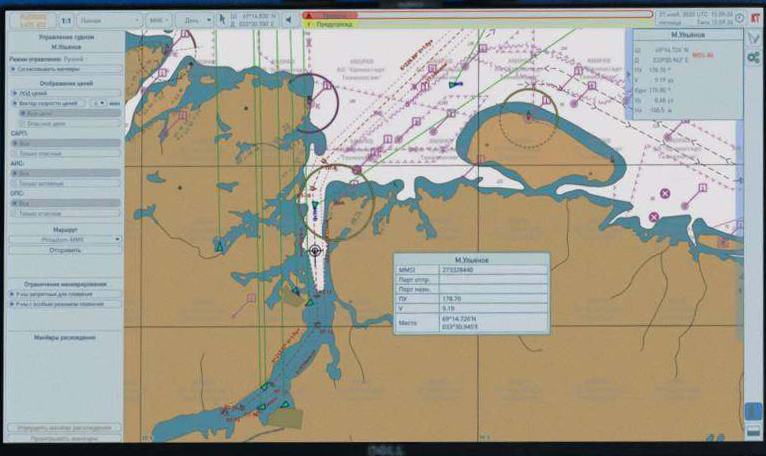

Технологии
- Трехэтапный план
- Функциональный подход
- Системная архитектура
- Автономная навигационная система
- Оптическая система анализа ситуационной обстановки
- Система координированного управления движением
- Расширение систем управления техническими средствами
- Пульт дистанционного управления
- Аппаратное обеспечение а‑Нав
- Передача данных и кибербезопасность
- Мостиковый планшет
- Караванное управление
- Нормативное регулирование
Автономная
навигационная система
АНС предназначена для выполнения функций по автоматическому анализу окружающей обстановки, переходу судна по заданному маршруту в автоматическом режиме и режиме дистанционного управления, и автоматическому принятию решений по маневрированию судна с учетом параметров судна и положений МППСС-72. АНС включает подсистему обработки навигационной информации (ПОИ), подсистему автоматического маневрирвоания и расхождения (ПАМИР), и Клиент АНС (представляющий расширенную функциональность ЭКC).
ПОИ в режиме реального времени получает и автоматически интегрирует данные от всех доступных источников информации (РЛС, АИС, глобальные системы спутниковой навигации и позиционирования, метеостанция и др., включая ОПС) о целевой обстановке, собственном судне и состоянии систем управления движением. Аналогичным образом сейчас собирает и интегрирует данные на борту человек с помощью своего зрения и интеллекта. Полученные и интегрированные данные передаются в режиме реального времени в ПАМИР и Клиент АНС (в т.ч. в полном объеме для отображения на ПДУ), а также в СРД. Данные об идентифицированных целях ПОИ также передает в ОПС для учета и отображения последней.
ПАМИР в режиме реального времени осуществляет автоматическое построение маршрута движения судна в соответствии с рейсовым заданием (предварительной прокладкой), комплексный анализ (в т.ч. с учетом параметров собственного судна) и принятие решения по маневрированию в соответствии с МППСС-72 с использованием информации о целевой обстановке, собственном судне, состоянии энергетической установки, системе управления движением. Изменения маршрута передаются в Клиент АНС для отображения и, опционально, для подтверждения (при активации соответствующей опции режима автоматического управления). Команды на подачу звуковых сигналов, сигнальных огней и знаков передаются для исполнения на системы управления сигнализациями на судне и для отображения в Клиент АНС.
ПАМИР обеспечивает непрерывный автоматический контроль безопасности от посадки на мель, столкновения (навала) с навигационными опасностями, которые могут быть вызваны навигационными ошибками. Это включает в себя заблаговременные действия для предотвращения от столкновения с навигационной опасностью (входа в район, имеющий особый режим плавания), генерированию сигнала о приближении судна к навигационной опасности (опасной изобате) или к району с особыми условиями плавания. Для решения данной задачи ПАМИР непрерывно оценивает положение судна относительно навигационных опасностей (районов с особым режимом плавания). Для разработки алгоритмов ПАМИР в рамках группой экспертов впервые были однозначно определены и четко алгоритмизированы положения МППСС-72, что позволит сделать управление МАНС 100% предсказуемым, даже в сравнении с традиционными судами, управляемыми человеком.
Клиент АНС отображает в режиме реального времени информацию о навигационной обстановке, собственном судне и состоянии систем управления движением, а также рассчитанные ПАМИР маршруты движения и маневры в представлении аналогичном ЭКС, где соответствующая информация формируется в виде дополнительных слоев с возможностью выбора/переключения между ними. Также Клиент АНС позволяет осуществлять прокладку маршрута рейса оператором ПДУ или с использованием МП. Клиент АНС является ключевым инструментом для того, чтобы ответственный персонал в центре дистанционного управления или на борту судна своевременно получал уведомление или предупреждение о ситуации и планируемых решениях АНС. Опция подтверждения маневра в режиме автоматического управления также позволяет с помощью Клиента АНС осуществлять согласование автоматически рассчитанного маневра оператором ПДУ или человеком на борту судна. Клиент АНС устанавливается на ПДУ и МП на борту судна.